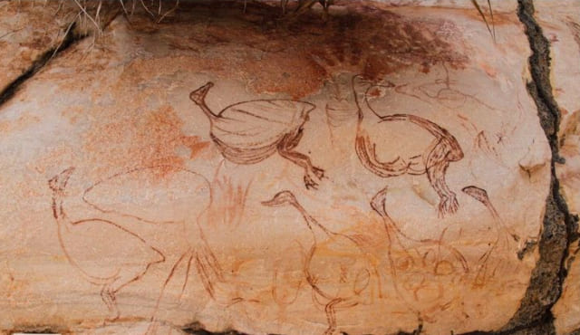
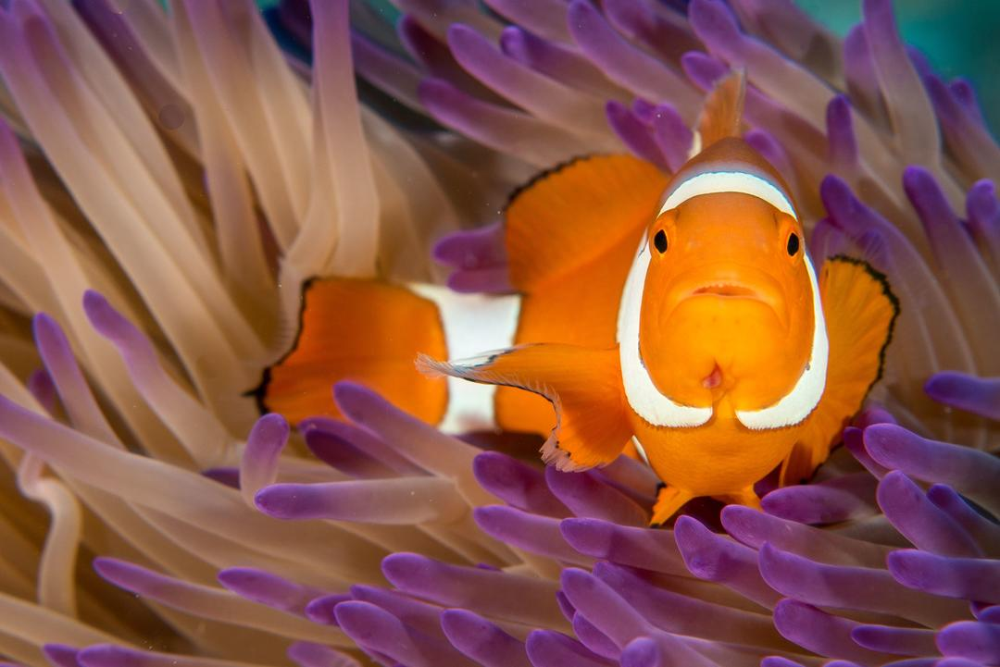
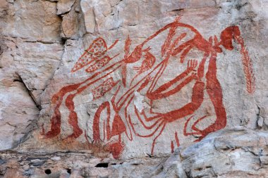

Австралія та Океанія: Магія унікальних країн та островів
Австралія та Океанія – це регіон, який охоплює величезні простори
Тихого океану, об'єднуючи континент Австралію та
тисячі островів, що розкидані на його водах. Ця частина світу вражає своєю різноманітністю: від
пустельних ландшафтів до
густих тропічних джунглів, від сучасних мегаполісів до віддалених племен і спільнот, які зберігають
традиції своїх
предків.

Австралія: континент унікальності і контрастів.
Австралія – найбільший острів та найменший континент на Землі. Вона славиться своєю дивовижною природою,
яку не можна
побачити більше ніде. Тут мешкають кенгуру, коали, вомбати і безліч інших ендемічних видів тварин.
Великий Бар'єрний риф
– одне з природних чудес світу, яке приваблює дайверів та туристів з усього світу. Окрім природи,
Австралія є домівкою
для таких великих міст як Сідней і Мельбурн, які вражають своєю культурною насиченістю.
Австралія та Океанія: Магія унікальних країн та островів
Австралія та Океанія– це регіон, який охоплює величезні простори
Тихого
океану, об'єднуючи континент Австралію та
тисячі островів, що розкидані на його водах. Ця частина світу вражає своєю різноманітністю: від
пустельних
ландшафтів до
густих тропічних джунглів, від сучасних мегаполісів до віддалених племен і спільнот, які зберігають
традиції своїх
предків.

Культура та спадщина
Населення Океанії має багату історію та культурну спадщину, яка тягнеться тисячоліттями.
Корінні народи, як-от аборигени
Австралії та маорі Нової Зеландії, зберігають давні звичаї, міфи та мистецтво. Їхні традиції й досі
впливають на сучасне
життя в цих країнах, додаючи особливого колориту регіону.
Підсумок
Австралія та Океанія – це дивовижний регіон, що поєднує природу, культуру і сучасні досягнення людства.
Незалежно від
того, чи ви шукаєте пригоди, релакс на пляжі, чи знайомство з багатими традиціями, тут кожен знайде щось
особливе для
себе.